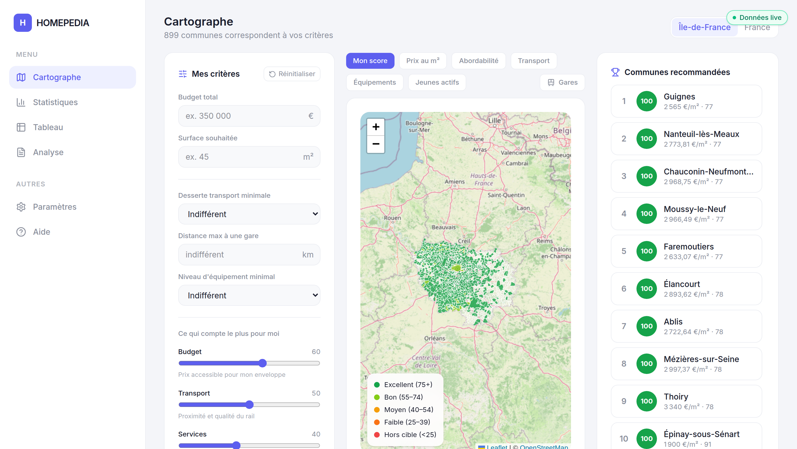
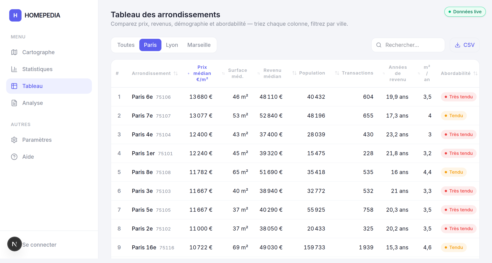
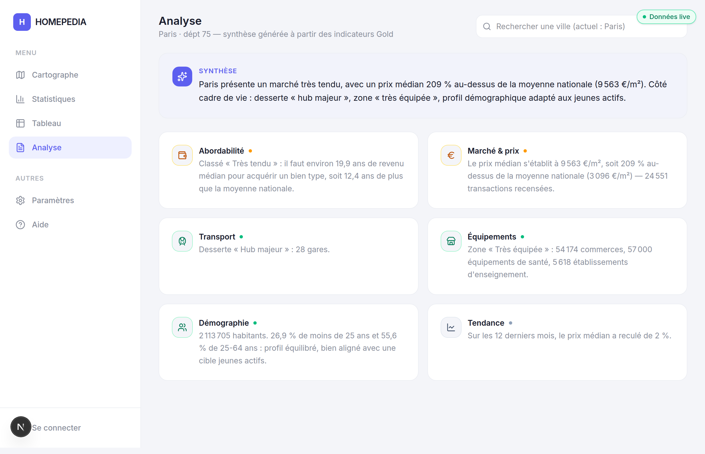
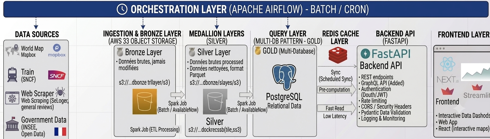

HOMEPEDIA
Rapport de visualisation des données
Où un jeune actif doit-il acheter en France ?
Justification des visualisations, des métriques et des règles métier.
HOMEPEDIA aide un jeune actif à décider où acheter un bien en France. La difficulté n'est pas le manque de données, mais leur lecture : un prix au m² seul ne dit pas si un quartier est abordable au regard des revenus, bien desservi, équipé, ou peuplé de « gens comme moi ».
Chaque visualisation du front existe pour transformer une de ces questions en une décision. Ce rapport justifie, pour chaque graphique, le choix de la métrique, son utilité, son lien à la problématique et son mode de calcul.
La donnée provient de la couche Gold (PostgreSQL pré-agrégé, architecture médaillon Bronze → Silver → Gold), consommée via une API. Elle croise quatre axes de décision :
Les visualisations sont organisées autour de ces quatre axes.
C'est la vue d'entrée. Elle colore chaque commune d'Île-de-France (ou chaque département en vue « France ») et répond à la question centrale : « où, sur le territoire, dois-je regarder ? ». Sa force est de superposer tous les critères sur une même lecture spatiale.

Métrique phare : un score unique qui synthétise l'adéquation d'une commune au profil de l'utilisateur. Il agrège quatre sous-scores : budget, transport, services, jeunes actifs : chacun normalisé entre 0 et 1, puis combinés en moyenne pondérée par les curseurs d'importance que l'utilisateur règle lui-même (les dimensions sans donnée sont exclues du calcul). La couleur va du vert (excellent, ≥ 75) au rouge (hors cible, < 25).
c'est la traduction directe de la problématique : au lieu de comparer mentalement cinq indicateurs, l'utilisateur voit une carte à son image. En déplaçant les curseurs (« le budget compte plus que le transport »), il voit la carte se recolorer : la décision devient exploratoire et personnelle.
1. On note chaque dimension de 0 à 100.
2. On fait la moyenne pondérée de ces quatre notes par les curseurs d'importance (Budget / Transport / Services / Ambiance jeune). Une dimension sans donnée est simplement retirée de la moyenne.
Exemple. Notes 80 / 80 / 75 / 60 et poids par défaut 60 / 50 / 40 / 30 → (80·60 + 80·50 + 75·40 + 60·30) ÷ (60+50+40+30) = 13 600 ÷ 180 ≈ 76 / 100 : commune affichée en vert sur la carte.
La même carte se relit selon un seul critère à la fois : Mon score, Prix au m², Abordabilité, Transport, Équipements, Jeunes actifs. Chaque mode a sa propre échelle de couleur et sa légende (verrouillées ensemble dans le code pour ne jamais diverger). Un calque de gares (points cliquables) se superpose pour juger la desserte fine. Les filtres durs (desserte minimale, distance max à une gare, niveau d'équipement minimal) grisent les communes hors critères, et une liste de recommandations classe les meilleures.
un jeune actif ne pondère pas tout pareil. Les modes permettent d'isoler le critère décisif du moment (« montre-moi seulement l'abordabilité »), tandis que les filtres durs éliminent d'emblée l'inacceptable (« pas de bien à plus de 2 km d'une gare »).
Cliquer une commune ouvre une fiche : score et ses 4 sous-scores en barres,
surface atteignable avec le budget saisi (budget ÷ prix_m2 local), mini-courbe de
tendance, transport, équipements et pyramide d'âge. Pour Paris, Lyon et Marseille, un
drill-down descend à l'arrondissement : seule granularité infra-communale disponible.
la carte donne la vue d'ensemble ; la fiche donne les informations concrètes pour décider sur une zone précise, dont le message le plus parlant pour un acheteur : « avec votre budget, ici, vous pourriez acheter ≈ X m² ».
Elle approfondit une zone choisie (Paris par défaut, ou « France entière » en agrégat pondéré). Les graphiques sont groupés en trois blocs.
Une table triable / filtrable des 45 arrondissements de Paris, Lyon et Marseille : prix médian, surface, revenu, population, transactions, années de revenu, m²/an, classe d'abordabilité : avec export CSV.
la carte est faite pour explorer, le tableau pour comparer et classer précisément (« trier tous les arrondissements du plus abordable au plus tendu »). C'est aussi la seule vue qui exploite la granularité infra-communale de la couche Gold, essentielle pour un choix intra-Paris.

Un moteur à base de règles (seuils + gabarits, sans IA) traduit les chiffres d'une commune en analyse rédigée : un paragraphe de synthèse puis des cartes thématiques (abordabilité, marché, transport, équipements, démographie, tendance), chacune comparée à la moyenne nationale et colorée par tonalité (favorable / neutre / vigilance).
toute la richesse des données ne sert à rien si l'utilisateur ne sait pas l'interpréter. La synthèse rend la donnée lisible pour un non-expert ; basée sur des règles, elle est déterministe et explicable (même entrée → même texte), contrairement à une génération par LLM.

Au-delà du comment (annexe en fin de rapport), chaque règle a été retenue pour trois qualités : rester lisible pour un non-expert, robuste aux défauts des données ouvertes, et comparable d'une commune à l'autre. Pour chacune, on explicite l'alternative écartée et la raison.
Médiane, pas moyenne.
les prix immobiliers forment une distribution asymétrique à droite (quelques ventes de luxe). La médiane (la valeur du milieu : autant de ventes en dessous qu'au-dessus) reflète la transaction typique que rencontrera l'acheteur.
la moyenne, tirée vers le haut par les biens d'exception, gonfle le prix « normal » et fausse la comparaison entre communes.
Bornes anti-aberrant [500 ; 20 000] €/m².
DVF contient des erreurs de saisie et des mutations non-standard (parkings, dépendances) aux €/m² absurdes ; des bornes fixes les écartent de façon stable et reproductible.
un filtrage statistique par commune (IQR / z-score) serait instable sur les communes à faible volume de ventes et moins auditable.
Filtre « mono-bien ».
une mutation peut regrouper plusieurs lots (vente d'immeuble) : son €/m² global n'a pas de sens. On ne garde que les ventes d'un logement unique, seules réellement comparables.
diviser la valeur totale par la surface d'une vente multi-lots injecterait un prix au m² bruité et biaisé.
Logement type fixe de 70 m².
figer la taille du « panier » rend les communes comparables sur un même bien de référence (≈ 2-3 pièces, cible d'un jeune ménage).
indexer sur la surface médiane locale mélangerait « moins cher » et « plus petit », cassant la comparabilité inter-communes.
Années de revenu = prix_m2 × 70 / revenu_median.
« combien d'années de revenu pour un logement type » est intuitif et sans hypothèse de taux ni de durée de prêt : donc explicable et stable dans le temps.
un taux d'effort mensuel (mensualité ÷ revenu) dépendrait du taux d'intérêt et de la durée du prêt : plus fragile, daté, et moins pédagogique.
Seuils 7 / 12 / 18 ans.
ancrés sur des repères d'accession réels : <7 finançable confortablement, 7-12 territoire d'un prêt standard (20-25 ans, effort tenable), 12-18 tendu, ≥18 hors de portée pour un jeune acheteur. Des seuils absolus donnent une lecture stable dans le temps et l'espace.
des classes par quantiles de la distribution ne seraient pas comparables d'une année ou d'une région à l'autre, et « 3ᵉ quartile » ne parle pas à un acheteur.
Desserte 100 / 80 / 55 / 10 + pénalité au-delà de 2 km.
barème non-linéaire : l'écart hub ↔ bien desservie est faible, mais « non desservie » est quasi rédhibitoire pour un jeune actif sans voiture. Le seuil de 2 km ≈ distance à pied/vélo raisonnable vers la gare.
un espacement linéaire égal traiterait « non desservie » comme un simple cran de moins ; ignorer la distance ferait scorer pareil deux communes « desservies » avec une gare à 0,2 km et à 3 km.
Niveau d'équipement 100 / 75 / 50 / 20.
classes dérivées des comptages BPE, avec un plancher bas (20) qui marque nettement une commune sous-équipée dans le score.
le comptage brut d'équipements n'est pas normalisé (une grande ville domine mécaniquement) et n'est pas combinable aux autres notes.
Moyenne pondérée par curseurs, dimensions manquantes exclues.
l'arbitrage (budget vs transport…) appartient à l'utilisateur ; exclure une dimension sans donnée évite de pénaliser une commune pour un simple trou de données.
des poids fixes ne seraient pas personnels (contraire à la « carte à son image ») ; imputer les valeurs manquantes introduirait un biais silencieux.
Jeunes actifs : 50 % → 0, 85 % → 100.
bornes plausibles de la part active : en-dessous de 50 % la zone vieillit, 85 % = très jeune/active. Un rescale linéaire entre ces bornes donne une note 0-100 combinable.
le pourcentage brut n'est pas normalisé et ne se combine pas aux trois autres notes.
Moteur à seuils + gabarits, déterministe.
reproductible (même entrée → même texte), explicable et auditable, sans hallucination ni coût/latence d'API : indispensable pour un rendu où chaque phrase doit être justifiable.
une génération par LLM serait non-déterministe, risquerait d'inventer des chiffres, et serait plus difficile à défendre et à reproduire.
HOMEPEDIA repose sur une architecture médaillon (Bronze → Silver → Gold) : chaque couche a une responsabilité unique, ce qui rend la chaîne rejouable, testable et découplée. Un plan de service (API + front) est séparé du plan de calcul (Spark), pour maîtriser les coûts et la charge.
En clair. Imaginez une chaîne de raffinage : on collecte des matériaux bruts (Bronze), on les nettoie et les met en forme (Silver), puis on prépare des produits finis prêts à consommer (Gold). Le site web ne fait que « lire » ces produits finis déjà préparés, ce qui le rend rapide.

market, demographics,
mobility, services). L'API lit ce Gold directement : aucun
calcul à la requête.| Brique | Techno | Rôle & justification |
|---|---|---|
| Object store | MinIO / S3 | Stockage Bronze/Silver ; API S3 standard, découplée du calcul. |
| Traitement | Apache Spark 3.5 | Nettoyage distribué du Silver ; encaisse la volumétrie DVF (millions de lignes). |
| Gold servi | PostgreSQL 16 | Relationnel + JSON ; Gold pré-agrégé donc léger : simplicité d'exploitation (plutôt qu'une base OLAP). |
| Cache | Redis 7 | Met en cache les réponses API les plus lues (carte France). |
| API | FastAPI | Lecture seule du Gold ; documentation OpenAPI automatique. |
| Frontend | Next.js 16 | Carte + tableaux de bord ; rendu serveur, comptes gérés côté front. |
| Orchestration | Apache Airflow 2.10 | 3 DAGs mensuels, dépendances explicites, tests de qualité des données, retries. |
| Calcul à la demande | GCP Compute Engine | VM Spark allumée/éteinte par Airflow : on ne paie que pendant les runs. |
| Gouvernance | OpenMetadata | Catalogue + lignage des jeux de données. |
| Livraison | GitHub Actions + GHCR | Build/push de 4 images, déploiement automatisé du VPS. |
| Reverse-proxy | Caddy | HTTPS automatique (Let's Encrypt) devant l'API et le front. |
Airflow (sur le VPS) orchestre trois DAGs mensuels — housing_etl,
mobility_etl, amenities_etl — chacun enchaînant ingestion :
Bronze→Silver : Silver→Gold : contrôle qualité : rafraîchissement du cache. Pour le
calcul lourd, Airflow démarre une VM Spark sur GCP avant le run, y exécute les
spark-submit par SSH — un job à la fois pour ne pas saturer la
machine — puis éteint la VM (même en cas d'échec).
En production, tout est conteneurisé. Un VPS héberge le plan de service (Caddy, API, front, Redis, Airflow) ; la VM GCP héberge le plan de calcul (Spark). La CI/CD GitHub Actions construit et publie quatre images sur GHCR, puis met à jour le VPS. Les secrets ne sont jamais dans le code (injectés au déploiement).
Le projet a été mené de façon incrémentale, domaine par domaine : plutôt que de tout ingérer d'un coup, on a livré une première verticale complète (prix DVF), puis répliqué le schéma aux autres domaines (transport, services, démographie).
Les sources sont toutes publiques (DVF, INSEE FiLoSoFi / recensement / BPE, SNCF). L'ingestion dépose le brut en Bronze ; le nettoyage Silver applique les règles métier justifiées en section IV (bornes anti-aberrantes, filtre mono-bien, médiane…) ; l'agrégation Gold pré-calcule les indicateurs par commune × année. Des scripts de backfill permettent de (re)charger un millésime à la demande.
[500 ; 20 000]), seuils
absolus (7 / 12 / 18 ans), logement type de 70 m² — aucun calcul ne dépend d'un
tirage aléatoire ni de la distribution locale du moment.year), donc on régénère exactement le Gold d'un millésime
donné, sans ambiguïté sur les données utilisées.taskfile raccourcit les commandes
courantes..env gitignoré en dev, secrets GitHub
injectés en prod).| Métrique | Calcul | Source · Millésime |
|---|---|---|
Prix médian au m²prix_m2_median |
Filtre « mono-bien », puis prix_m2 = valeur_fonciere / surface_reelle_bati,
bornes anti-aberrant [500 ; 20 000] €, puis médiane par commune × année. |
DVF (Etalab) · 2021/2022/2024 |
Années de revenuaffordability_years |
prix_m2 × 70 / revenu_median : nombre d'années de revenu médian pour un logement
type de 70 m². |
DVF × FiLoSoFi · revenu 2023 |
m² par anm2_par_an |
revenu_median / prix_m2 : m² achetables avec un an de revenu médian. |
DVF × FiLoSoFi |
Classe d'abordabilitéaffordability_class |
Seuils sur les années de revenu : Très abordable <7 · Abordable 7–12 · Tendu 12–18 · Très tendu ≥18. | Dérivé de affordability_years |
Dessertedesserte_class |
Segment SNCF de la gare (A = Hub majeur, B = Bien desservie, C = Desservie) ; sans gare → Non desservie + distance haversine (à vol d'oiseau) à la plus proche. | SNCF open data · 2024 |
Niveau d'équipementniveau_equipement |
Dérivé des comptages d'équipements (Santé, Commerces, Enseignement, Supermarchés…) par commune → Sous-équipée … Très équipée. | BPE (INSEE) |
Structure par âgepct_moins25 / 25_64 / 65plus |
Parts (%) de tranches d'âge disjointes, agrégées en 3 classes. | Recensement INSEE · 2022 |
| Score de correspondance (calculé côté front) |
Moyenne pondérée de 4 notes 0–100 (budget, transport, services, jeunes actifs) par les curseurs d'importance de l'utilisateur : détail et exemple dans l'encadré « pas à pas » (III.1). | Front · scoring.ts |
| Variation mensuelle (Δ) | Écart en % entre les deux derniers mois disponibles de la série de tendance. | DVF (trend mensuel) |
Les métriques catégorielles (abordabilité, desserte, équipement, démographie) sont pré-calculées dans
la couche Gold et lues par l'API ; le score de correspondance et les variations sont calculés côté
front.
Sources : docs/fiche_ville.md, docs/silver_dvf_logic.md,
frontend/src/lib/scoring.ts, analysis.ts, map-modes.ts.
HOMEPEDIA · Epitech T-DAT-902.